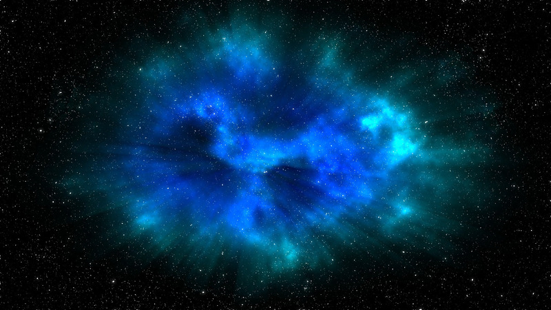

The James Webb Space Telescope Project
The James Webb Space Telescope’s revolutionary technology will study every phase of cosmic history—from within our solar system to the most distant observable galaxies in the early universe. Webb’s infrared telescope will explore a wide range of science questions to help us understand the origins of the universe and our place in it.
When is the Launch?
Webb is NASA’s largest and most powerful space science telescope ever constructed. Webb’s enormous size and frigid operating temperature present extraordinary engineering challenges. After launching from French Guiana, the observatory will travel to an orbit about one million miles away from Earth and undergo six months of commissioning in space—unfolding its mirrors, sunshield, and other smaller systems; cooling down; aligning; and calibrating. Astronomers worldwide will then be able to conduct scientific observations to broaden our understanding of the universe. Webb will also complement the science achieved by other NASA missions. Source: jwst.nasa.gov